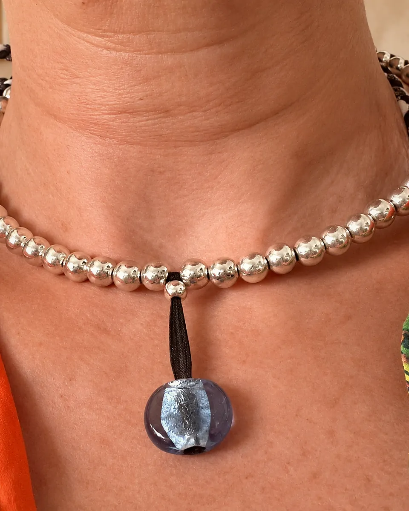
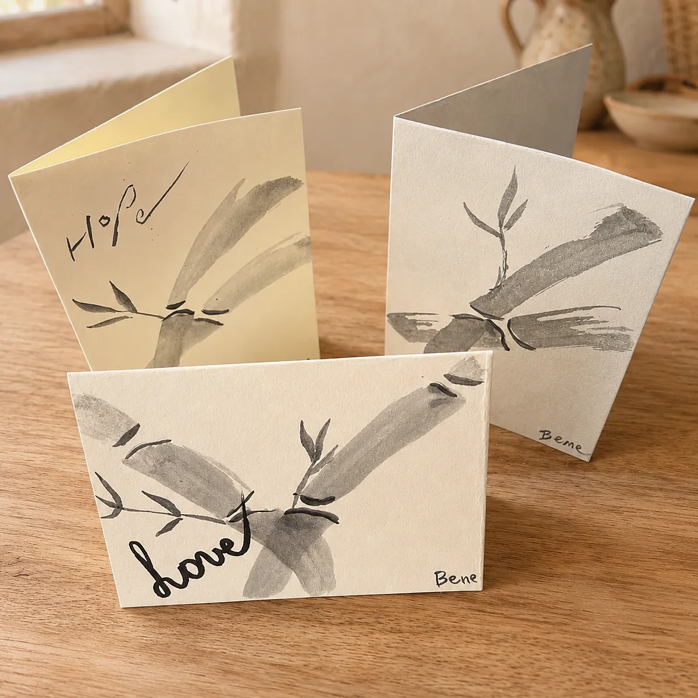
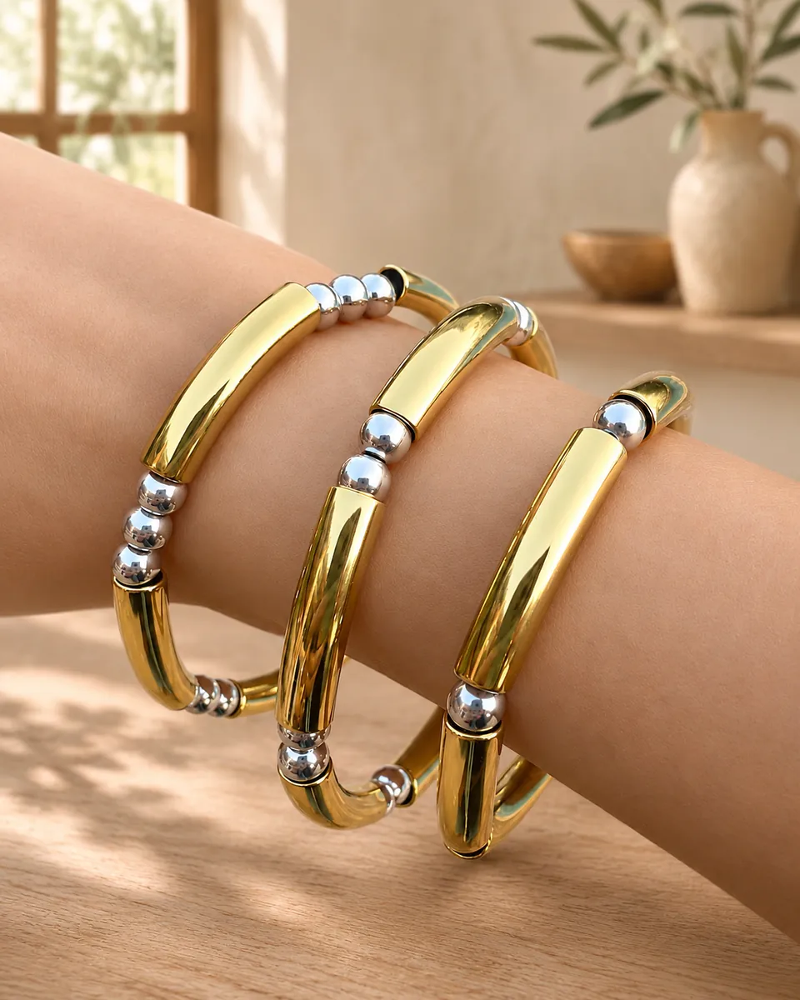
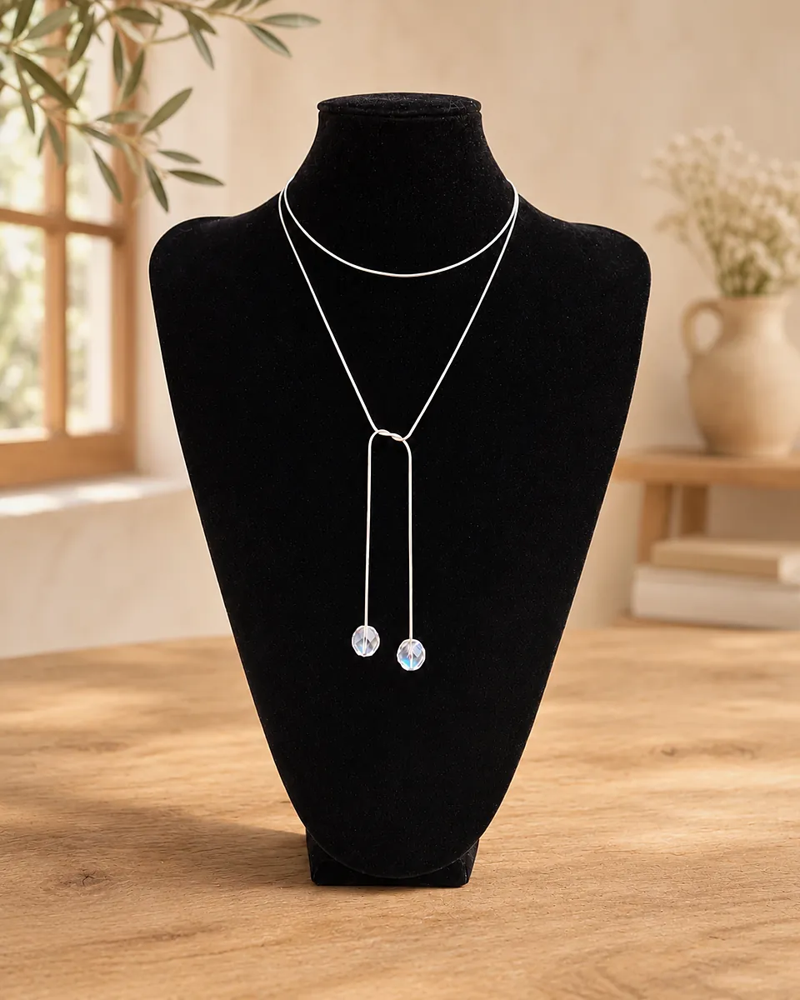

Hecho a mano con alegría.
Pequeños objetos.Mucho corazón.
Faroles, joyas, tarjetas pintadas y objetos con una segunda vida. Todo hecho a mano por Bene, con mucha imaginación.

Crea porque le hace feliz. Y porque las ideas no paran de llegar.
A Bene le encanta trabajar con las manos: probar materiales, mezclar colores y ver cómo una idea se convierte en algo que se puede tocar. Le gustan todos los colores, las pequeñas tiendas llenas de objetos únicos y descubrir qué puede llegar a ser un objeto que otros tirarían. Cada pieza sale distinta, y eso es lo bonito.
Lo que sale de sus manos
Un poco de todo. Si se le ocurre, lo intenta.
- Faroles y lámparas
- Collares y colgantes
- Pulseras
- Servilleteros
- Tarjetas pintadas a mano
- Jarroncitos de pared
- Objetos hechos con vinilos
- Encargos personalizados
Algunas de sus ideas
Una pequeña muestra. Hay muchas más en su Instagram.











Lo viejo también tiene ideas
Una de las cosas que más le gustan a Bene es dar una segunda vida a los objetos. Unos discos olvidados se convierten en cuencos, bandejas o un soporte para la mesa. Antes de tirar algo, ella se pregunta: ¿en qué podría convertirse?
«Lo que más me gusta es trabajar con mis manos y ver la pieza terminada. Ojalá sientas un poquito de la alegría que sentí al crearla.»— Bene
¿Te gusta algo? ¿Tienes una idea?
Escríbele a Bene para preguntar por una pieza, pedir un encargo o simplemente saludar.